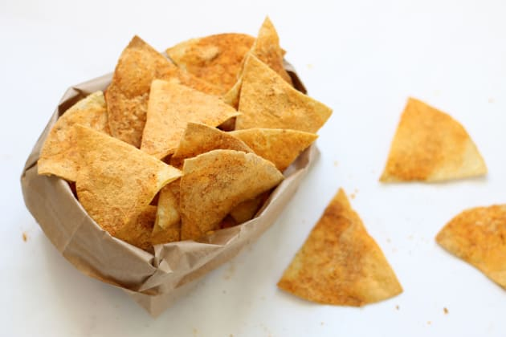

-Polenta 200 gramos
-Harina de trigo 30 gramos
-Agua cantidad necesaria
-Aceite 30 mililitros
-Sal 10 gramos
-Pimentón 10 gramos
Utensilios:Bowl, palo de amasar, bandeja
*Primer paso: Mezclamos la harina, la polenta, la sal y el pimentón.
*Segundo paso: Agregamos agua caliente, ir vertiendo de a poco para que la masa quede en un punto medio ni muy seca ni muy húmeda para amasar.
*Tercer paso: Amasamos y formamos un bollo, dejamos reposar en un bowl unos 15 minutos.
*Cuarto paso: Estiramos y cortamos en triángulos pequeños, colocamos en asadera, plato o bandeja y ponemos a congelar 30 minutos.
*Quinto paso: Sacamos del frío justo antes de cocinarlos para que no se ablanden, luego freímos en aceite u horneamos los doritos rociados con aceite.
